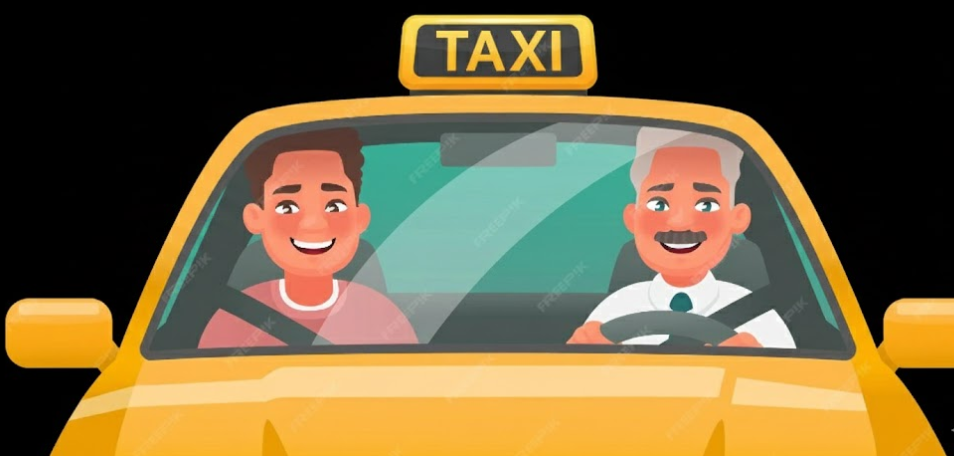

iDrive is similar to Uber
It is a newly created website, which helps you get to your destination safely and quickly.
We connect passengers with drivers through a technology platform that makes transportation easy, safe, and accessible.
We started because we wanted to make rides reliable, easy and accessible for everyone through just a simple mobile phone.
Where ever you are or where ever you what to go, iDrive is always going to be your super hero.
We believe getting around your city should be simple, reliable, and stress-free and that technology can make transportation more accessible and efficient for people everywhere.
You can book a ride anytime.
You don't need to wait on the streets.
Quick pick and drop from the nearby drivers.
You will reach just in time to your destination.
You can pay through mobile.
The fare would be calculated automatically.
You don't need to worry about drivers charging extra fares, as prices are shown upfront before you book.
Traffic jam would be reduced.
The drivers can skip parking fees.
Being called an Uber driver or iDriver reflects a professional role.
The drivers feel respected and confident or pride in their role.
